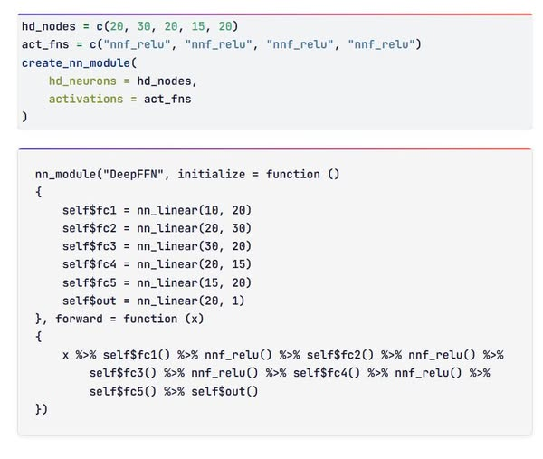

Joshua Marie Ongcoy
Services
About
Posts
Check out my blogs
Author
Joshua Marie Ongcoy
On this page
Subscribe to My Newsletter
Edit this page
Report an issue
Categories
All
(2)
R
(2)
machine-learning
(2)
pointless-code
(1)
time-series
(1)
torch
(1)
Subscribe to My Newsletter
Get notified when I publish new posts. No spam, unsubscribe anytime
Order By
Default
Title
Date - Oldest
Date - Newest
Author

Automatically generate Deep Feedforward Neural Network (DFFNN) module from torch expression
Use case of code generation in practice
R
machine-learning
torch
pointless-code
I have a course tutorial, which I discuss the things to get “advance” in R. Code generation is part of it. My blog compiles
pointless codes
in
pointless code series
, and…
Sep 23, 2025
Joshua Marie Ongcoy
First level of time series modelling: Basic ARIMA model hyperparameter tuning
With plots
R
time-series
machine-learning
How do you train ARIMA model in your time series models? Grid search, or Hyndman and Khandaka (2008) algorithm? I created this document to demonstrate you how to fit every…
Sep 27, 2025
Joshua Marie Ongcoy
No matching items